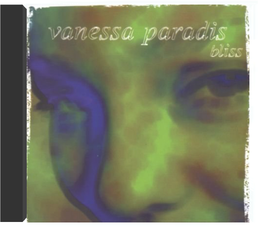

 blissvanessa paradis  Autrefois en balade, avec "Joe le taxi", dans l'ombre de Serge Gainsbourg ou de Lenny Kravitz, Vanessa Paradis, désormais émancipée, s'est mise à son compte pour raconter ses petits bonheurs domestiques, ses miracles quotidiens. L'ex-lolita devenue maman nourrit son Bliss de ballades languides et d'orchestrations acoustiques. N'ayant pas un goût très prononcé pour le minimalisme, elle verse volontiers dans l'éclectisme. Des variations orientales "L'Eau et le vin" aux cuivres de "Commando", des violoncelles et cordes de "Que fait la vie" à la basse sensuelle de "La la la song" (liste des instruments non exhaustive), Paradis s'offre un vrai bazar de sonorités diverses qui habillent berceuses, bossa et titres funky chantés tantôt en anglais, tantôt en français. Avec une naïveté revendiquée, Vanessa Paradis, auteur ("When I Say", "Saint-Germain") voire compositeur ("Les Acrobates"), flotte dans un univers câlin, voyage dans une intimité doucereuse. Elle s'émerveille des tendres gazouillis de sa fille "La Ballade de Lily Rose" et des mélodies savamment orchestrées par Franck Monnet, Didier Golemanas, Johnny Depp, Alain Bashung ou Mathieu « M » Chedid, producteur d'une partie de l'album. Bliss, un bouquet de titres au charme irrésistible, offert par Vanessa Paradis en pleine béatitude. —Sabrina Silamo  Pas de doute : la musique d'Air ne pouvait être que l'idéal contrechamp aux images du long métrage de Sofia Coppola. D'un côté le film, où cinq adolescentes évoluent dans un univers balisé par un système réfractaire à la contre-culture des années soixante-dix, de l'autre, point trop acidulée pour éviter de provoquer l'écoeurement, la musique qui slalome entre des références arty choisies avec goût : Gainsbourg évidemment, les effluves easy listening de la muzak environnementale et Pink Floyd. Entre la sensualité lancinante d'un groove organique déjà repéré sur Moon Safari et les nappes synthétiques planantes, Air ne choisit pas. Définitivement post. —Philippe Robert  Zustand Vinyl:NM, ,Cover:NM (Goldmine Standards) - Sie bestellen:LP:Watsonian Institute,Master Funk.Versand |

Julien
Collection Total:
1 912 Items
1 912 Items
Last Updated:
Dec 19, 2021
Dec 19, 2021


 Made with Delicious Library
Made with Delicious Library